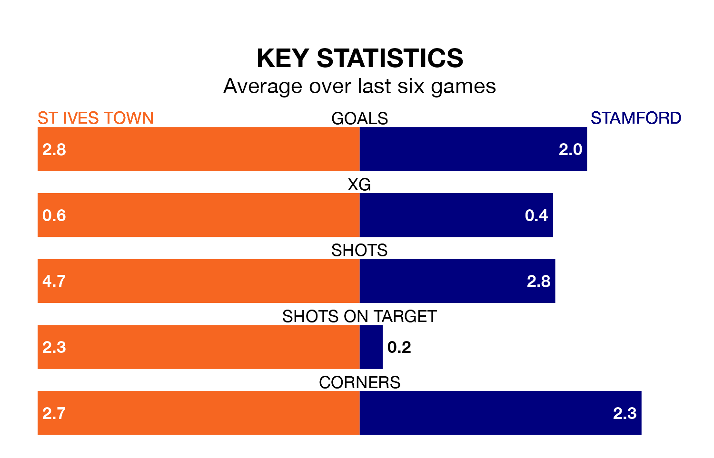

Monday's match between St Ives Town and Stamford promises to be one for the neutrals, as two of the Southern League Premier Central's most free-scoring sides go head-to-head.
Ahead of the game, St Ives and Stamford sit top and third in the goal-scoring charts, with 76 and 70 goals respectively.
St Ives are seventh in the table after 37 games, of which they have won 17 and drawn four, earning 55 points.
Stamford are one place behind Town in eighth, with 14 wins and 10 draws putting them on 52 points.
The hosts are in good form in the Southern League Premier Central, with four wins and a draw from their last six games.
With two wins and four losses over that period, the away team's form is much worse – they have taken six points from 18, compared to St Ives's 13.
St Ives's last match was on Saturday, a 4-2 win against AFC Sudbury.
Stamford lost 2-1 against Royston Town last time out, also on Saturday.
Updated: 10:31 (UTC), 31/03/24